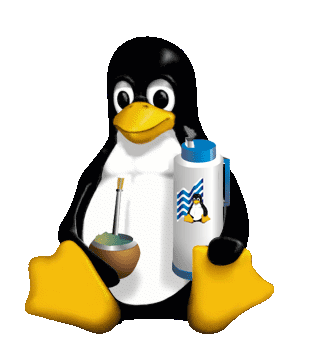

ALINEACION DE LA IMAGEN align="middle" TENIENDO EN CUENTA LA PRIMER LINEA DE TEXTO Desde 1984, Richard Stallman y muchos voluntarios están intentando crear un sistema operativo libre con un funcionamiento similar al UNIX, recreando todos los componentes necesarios para tener un sistema operativo funcional que se convertiría en el sistema operativo GNU. En el comienzo de los años 1990, después de seis años, GNU tenía muchas herramientas importantes listas, como compiladores, depuradores, intérpretes de órdenes etc, excepto por el componente central: el núcleo. Con el surgimiento del kernel Linux, esta laguna fue llenada y surgió el sistema operativo con el kernel Linux en conjunto con las herramientas GNU. De esta manera, Stallman juzga o indica, que este sistema operativo es una "versión modificada" del sistema GNU y por lo tanto debe tener la denominación GNU/Linux. Esta denominación resolvería la confusión entre el núcleo y el sistema operativo completo a que puede llevar, y de hecho ha llevado, la denominación Linux en solitario. Stallman también espera que, con el aporte del nombre GNU, se dé al proyecto GNU que él encabeza el reconocimiento que cree merecer, por haber creado las aplicaciones de sistema imprescindibles para ser un sistema operativo compatible con UNIX.
Richard Stallman ha reconocido que desde que existe Linux el desarrollo de un núcleo específico del proyecto GNU (el Hurd) ya no es prioritario. Esto explica que, después de dos décadas desde el anuncio del proyecto GNU, no esté acabado un sistema únicamente GNU.
Algunas distribuciones de Linux apoyan esta denominación, e incluyen GNU/Linux en sus nombres, tal es el caso de Debian GNU/Linux o GNU/LinEx. En el proyecto Debian también existe Debian GNU/Hurd y Debian GNU/kFreeBSD que combinan las aplicaciones de sistema de GNU con esos núcleos. Otras distribuciones, como Ubuntu, eligen denominarse solamente Linux [cita requerida].
Aunque la mayoría de usuarios (con alguna experiencia) ya generaliza a todas las distros como GNU/Linux, existen personas que por desinformación utilizan un termino global incorrecto, llamando a todo el software libre u open source como "Linux".
En ocasiones, el proyecto KDE ha utilizado una tercera denominación: GNU/Linux/X para enfatizar los tres proyectos sobre los que se apoya su entorno de escritorio.
Algunos sectores de la comunidad de usuarios del sistema operativo han rechazado la denominación GNU/Linux por varias razones, entre ellas que ya se había empezado a denominar Linux al sistema operativo antes de que Richard Stallman promocionase esta denominación. Otras personas se oponen a la postura ideológica de Stallman radicalmente en contra del software no libre y por ello son contrarios al uso de este nombre para evitar la promoción de las ideas del fundador del proyecto GNU. Otros sectores de la comunidad han reconocido la conveniencia de este nombre.
Hay que señalar que, al igual que es una simplificación denominar al sistema que usa el usuario final Linux, obviando las aplicaciones GNU que completan el sistema operativo, el conjunto Linux+GNU representa sólamente una parte (aunque importante) del software encontrado en una distribución Linux. Existe una gran cantidad de software original del sistema operativo BSD o producido independientemente de los proyectos GNU y Linux por otras personas u organizaciones, como por ejemplo Apache, el X Window System, Samba, KDE, OpenOffice.org y miles de otros.